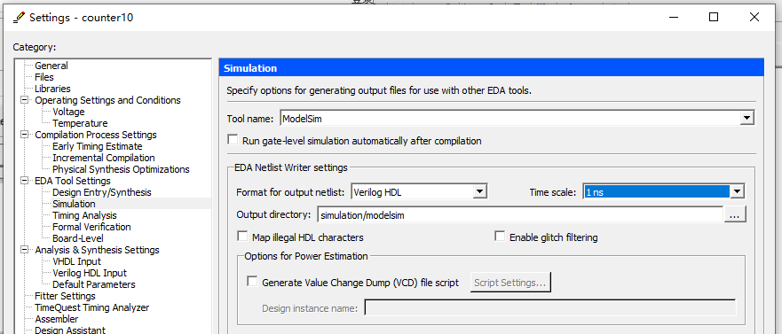

Al aprender Verilog para hacer simulaciones, se pueden elegir diferentes entornos de simulación. Los entornos de desarrollo FPGA incluyen ISE de Xilinx (actualmente descontinuado), VIVADO; Quartus II de Intel; los entornos de desarrollo ASIC incluyen VCS de Synopsys; muchas personas también usan el método de Icarus Verilog y GTKwave, que es más ligero.
Aunque ISE o Quartus II incluyen su propio simulador, sus funciones son limitadas. Por eso, aquí se presenta el método de prueba de simulación conjunta Quartus II + Modelsim, con entorno de ejecución en sistema 64bit-win10.
Instalación de Quartus II
La versión de Quartus utilizada en esta introducción es la 10.1.
Actualmente, el sitio web oficial de Quartus II ya no tiene paquetes de instalación para versiones inferiores a la 13.1. Pueden instalar versiones superiores a la 13.1. Las funciones son básicamente las mismas. Dirección de descarga:https://fpgasoftware.intel.com/13.1/?edition=subscription&platform=windows
Al descargar Quartus II 13.1 o superior, el sitio web oficial también recomienda la versión correspondiente de Modelsim; pueden descargarla junto con Quartus II.
Comience la instalación, modifique la ruta de instalación y siga los demás pasos con la configuración predeterminada.
La siguiente imagen es una captura de pantalla de una instalación exitosa.

Si se solicita un archivo de licencia, como se muestra en la siguiente figura, debe especificar el archivo de licencia proporcionado al comprar el software.

Si el archivo de licencia necesita reemplazar el Host-ID, solo debe reemplazar el HOSTID en el archivo de licencia por cualquiera de los ID de las opciones de NIC, como se muestra en el recuadro rojo de la siguiente figura:

Después de instalar Quartus II 10.1, también es necesario instalar Device, es decir, instalar los archivos de biblioteca que soportan varios modelos de dispositivos lógicos programables; de lo contrario, Quartus II no podrá crear proyectos correctamente.
La ruta de instalación debe seleccionar la ruta de instalación de Quartus II; en este momento, la instalación de Device puede reconocer automáticamente Quartus II.
Las versiones más recientes de Quartus II (por ejemplo, la versión 2016) ya soportan la instalación integrada.
Instalación de Modelsim
Para Modelsim, elija la versión modelsim-win64-10.1c-se.
También debe modificar la ruta de instalación y luego continuar con la configuración predeterminada.
Después de la instalación, puede que se solicite reiniciar el ordenador; reinicie.

Crear un proyecto Quartus II
Crear el proyecto
File->New project Wizard
Configure la ruta de trabajo, el nombre del proyecto y el nombre del módulo superior (top module).
Nota: al configurar la ruta y los nombres, no deben contener caracteres chinos.

Seleccionar el modelo de dispositivo
Solo realizaremos una simulación simple, sin descargas, grabaciones, etc., por lo que no necesitamos preocuparnos por señales específicas; podemos elegir cualquiera.
Luego haga clic en Next sucesivamente hasta Finish.

Crear un nuevo archivo fuente Verilog
A continuación, se realiza una simulación simple de un contador decimal de 4 bits.
Haga clic en: File->New->Verilog HDL File->OK
Haga clic en: File->Save As
Ingrese el nombre del módulo como: counter10.v
Es importante tener en cuenta que el nombre del top module debe coincidir con el nombre del proyecto; de lo contrario, se producirá un error (como se muestra en la figura).
Copie el código Verilog en el archivo counter10.v y realice la compilación con un clic (en realidad incluye compilación, síntesis, ubicación y enrutamiento, etc.).
Cuando se produzcan errores, se puede hacer clic en Error log para localizar el error, modificarlo hasta que no haya errores.

Simulación con Quartus II llamando a Modelsim
Configurar la simulación como Modelsim-altera
Haga clic en: Tool->Options->EDA Tool Options
Cambie la dirección después de Modelsim a la ruta del programa de inicio de Modelsim.

Seleccionar el simulador
Haga clic en: Assignments -> Simulation
En Tool name, seleccione ModelSim, y configure Format, Time scale, etc., como se muestra en la figura.

Escribir el archivo testbench
Haga clic en: Processing->start->Start TestBench Template Writer
Si la configuración es correcta, se generará en la ruta del proyecto simulation/modelsim.vtel archivo.
.vtLa plantilla del archivo ya proporciona el código de los puertos, las declaraciones de variables de interfaz y la asignación de las sentencias de instanciación. Lo que debemos hacer es completar el código de prueba en la posición adecuada del testbench.
Aquí escribimos brevemente el código de conducción de reloj y reinicio, como se muestra en la siguiente figura.

Agregar el testbench al proyecto
Haga clic en: Assignments -> Settings -> Simulation
En la opción Compile test bench, seleccione new, configure el Test bench name, y mediante la búsqueda de File name, agregue el archivo .vt generado en el paso anterior al proyecto.
Es importante tener en cuenta que el nombre del archivo testbench debe coincidir con el nombre del top module dentro del testbench; de lo contrario, se producirá un error al iniciar Modelsim más adelante y la simulación no funcionará correctamente.

Volver a compilar con un clic
En este momento, notará que el estado de compilación en la barra Tasks se ha convertido en un signo de interrogación, y debe volver a compilar con un clic.

Llamar a Modelsim para la simulación
Haga clic en: Tools->Run simulation Tool->RTL Simulation
En este momento, el software Modelsim se iniciará automáticamente.
La operación de Modelsim no se presenta en detalle aquí.
Según el diagrama de simulación, nuestro diseño ha completado la función básica de conteo decimal.

Resumen
En mi memoria, la simulación conjunta de Quartus II + Modelsim era poderosa y fácil de instalar. Años después, al repetir este proceso, encontré que los pasos son algo engorrosos y me tomé una noche completa para lograrlo. Muchos detalles ya se han indicado arriba; solo hay que prestarles atención. Sin embargo, cuando tengan la oportunidad de realizar simulaciones de módulos digitales grandes, descubrirán la efectividad de este método.
En los siguientes tutoriales, algunas simulaciones simples pueden realizarse con otro software, y la interfaz de las capturas de pantalla puede no coincidir con Modelsim. No duden de la precisión de la simulación al verlas. Esto se aclara especialmente aquí.
También se proporcionarán completamente los módulos de diseño y el código fuente del testbench, para que todos puedan simular y verificar por sí mismos.